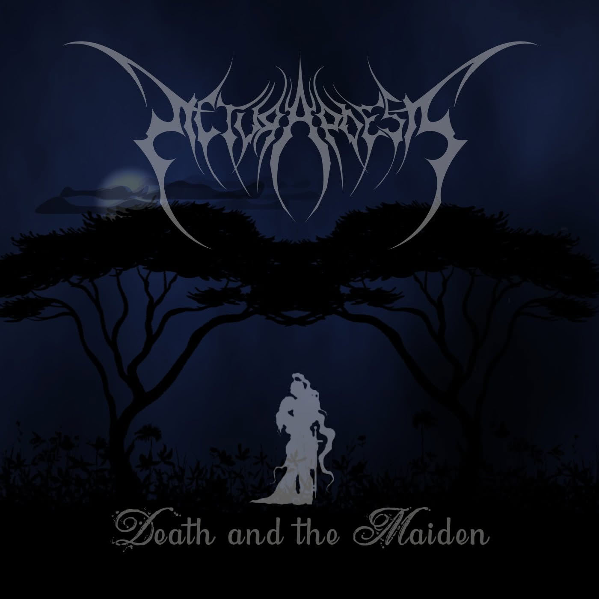
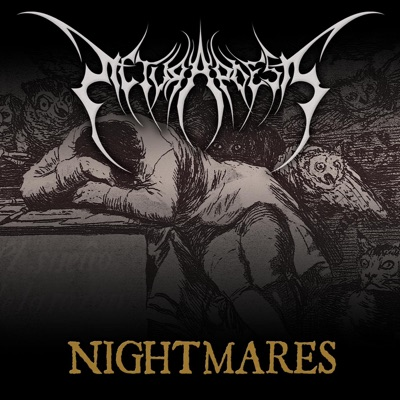
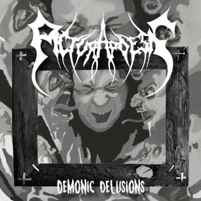
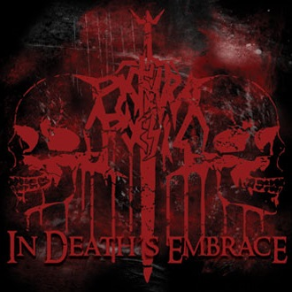

Single · 2022
Death and
the Maiden
A new interpretation of one of the earliest Pictura Poesis compositions, recorded in the band's contemporary sound.
Symphonic Extreme Metal · Netherlands
Where art, history and extreme music collide.
Pictura Poesis
Paintings, literature, history and mythology become the foundations for symphonic extreme metal.
Pictura Poesis explores the stories behind works of art and the worlds surrounding them. We are not simply retelling their subjects, but transforming their atmosphere, context and darker implications into music.
Explore the conceptDiscography
From the first demo to the latest single.

Single · 2022
A new interpretation of one of the earliest Pictura Poesis compositions, recorded in the band's contemporary sound.

Full Length · 2018
Seven works revisiting and reshaping material from the earlier years of Pictura Poesis.

Full Length · 2017
A journey through war, mythology, history, suffering and the fleeting nature of human existence.
The Archive

EP · 2014
The second chapter in the early development of the Pictura Poesis sound.

Demo · 2013
The first recorded chapter and the beginning of the band's relationship between extreme music and visual art.
Ut pictura poesis
Art & Music
The image is not decoration. It is where the music begins.
Paintings, poems, mythology and historical events form starting points for Pictura Poesis. Their stories are examined, questioned and transformed into musical worlds of their own.
Enter the galleryThe Story
From the first recordings to a new chapter currently taking shape.
Pictura Poesis has developed through demos, albums, international stages and changing musical eras while the central idea remained the same: bringing visual art, history and extreme metal together.
Explore the history